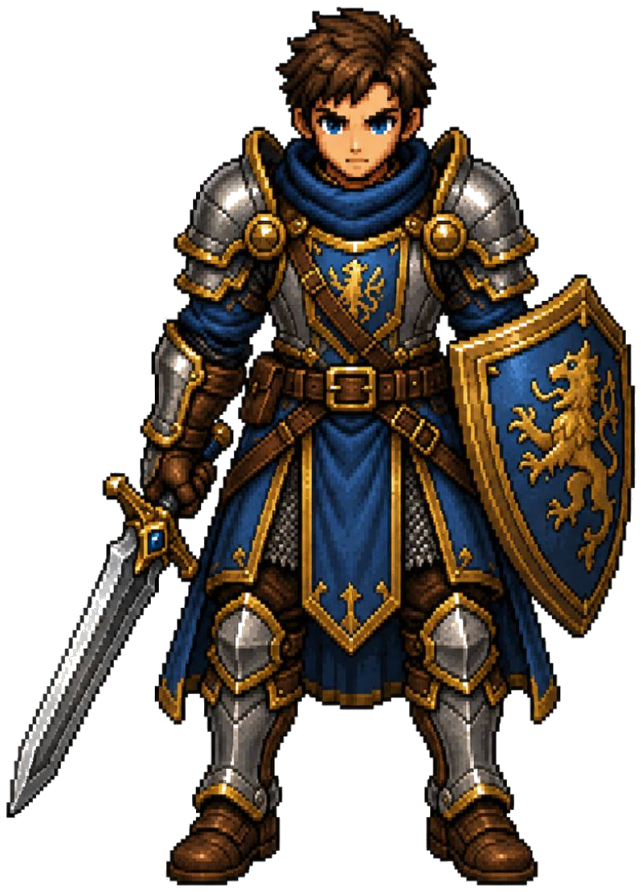
Guerreiro
Aguenta o tranco na linha de frente. Muita vida, muita defesa e golpes de area.
Saia de Eldoria com uma espada enferrujada e chegue à Fortaleza de Cinzas com uma lâmina encantada. Um RPG de aventura 2D para Android, feito em pixel art.
Versão beta 0.1.22, grátis.
Cada mapa é mais perigoso que o anterior e termina num chefe. As cidades são seguras: é lá que você compra, forja e prepara poções.
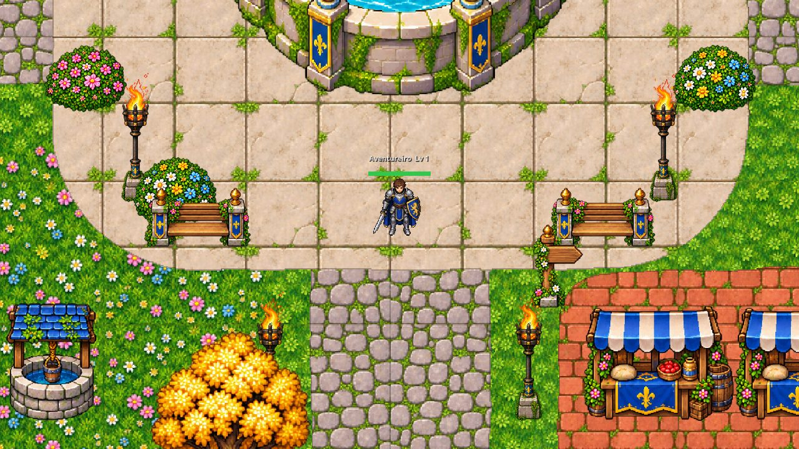
Onde tudo começa. Ferreiro, curandeira, mercador e as primeiras missões da Jornada.
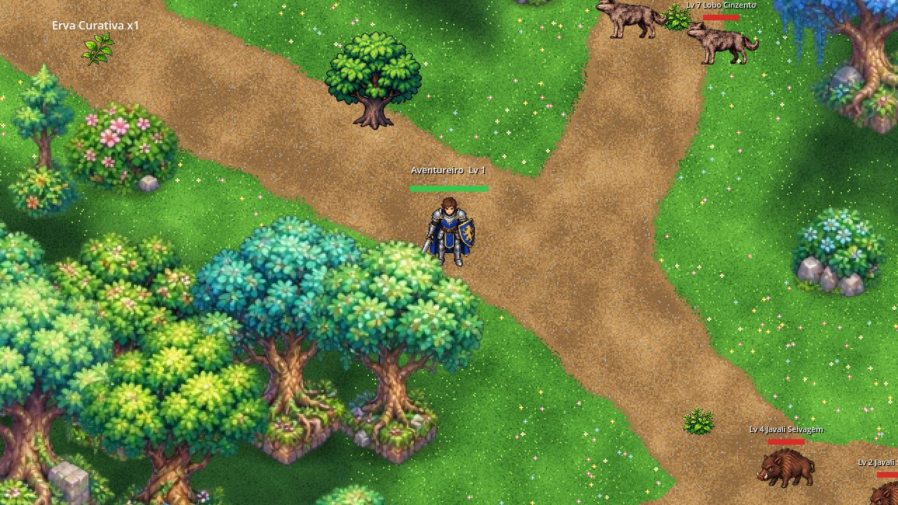
Javalis, lobos e aranhas entre árvores que você pode cortar. Chefe: Rei Javali.
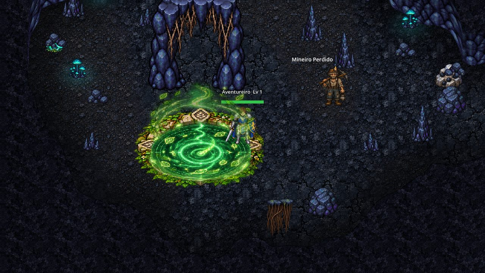
Morcegos, cristais para minerar e o ninho da Matriarca Venenosa.
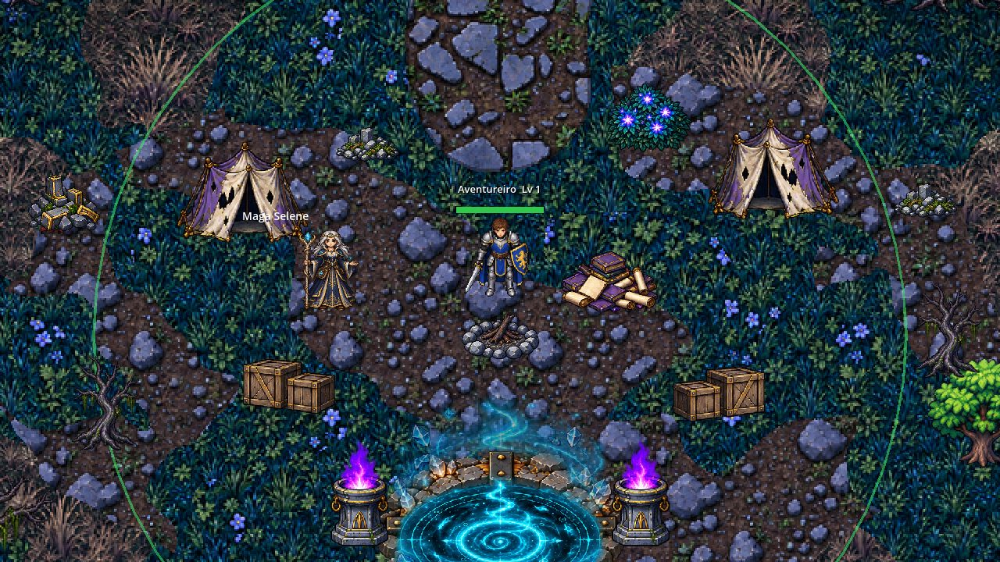
Espectros, sentinelas e o Arquimago Corrompido guardando o que sobrou da magia antiga.
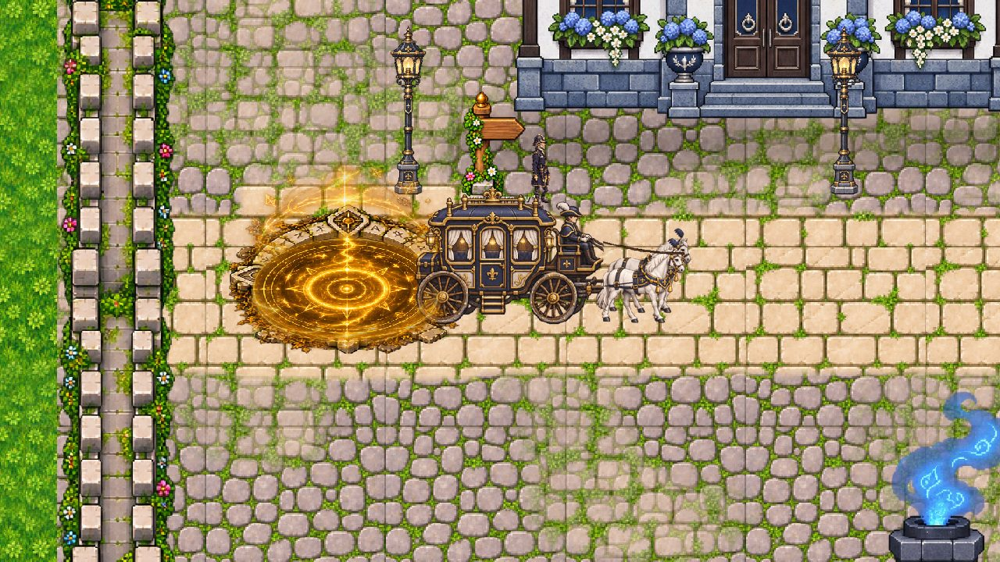
A capital: forja rara, mercado de pets e montarias, e a mesa de alquimia.
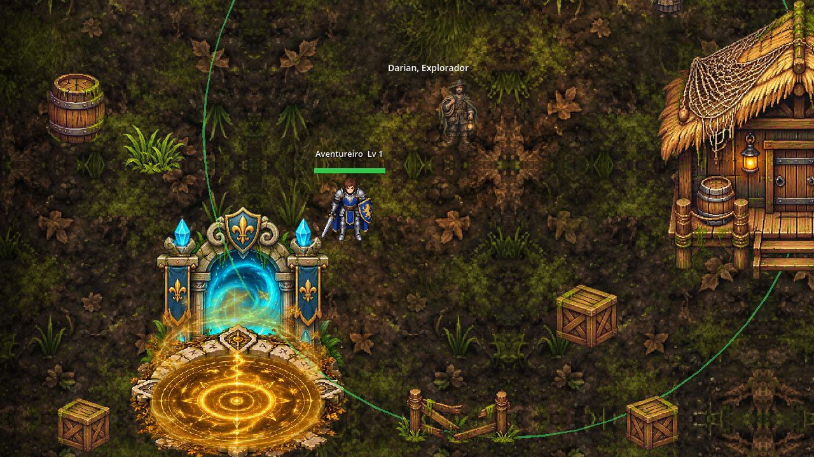
Jacarés, sapos venenosos e afogados na lama. Chefe: Rei Afogado.
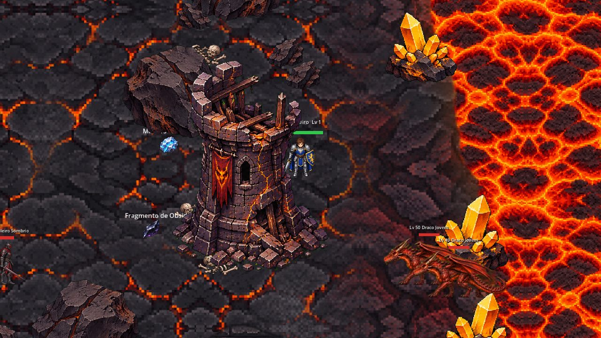
Rios de lava, dracos e cavaleiros sombrios. No fim da trilha, o General Infernal.
A classe vale o jogo inteiro. As habilidades sobem de nível conforme você usa.

Aguenta o tranco na linha de frente. Muita vida, muita defesa e golpes de area.
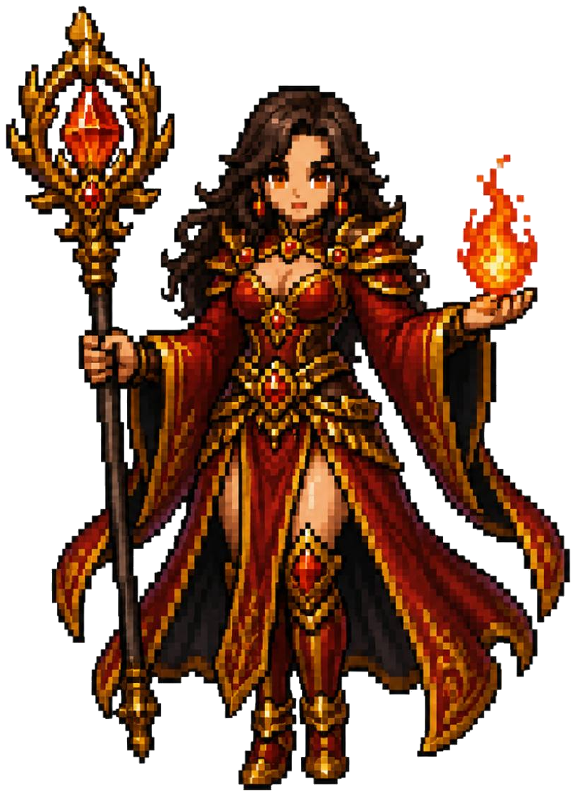
Dano mágico de longe e controle dos grupos. Frágeis, mas decidem a luta.
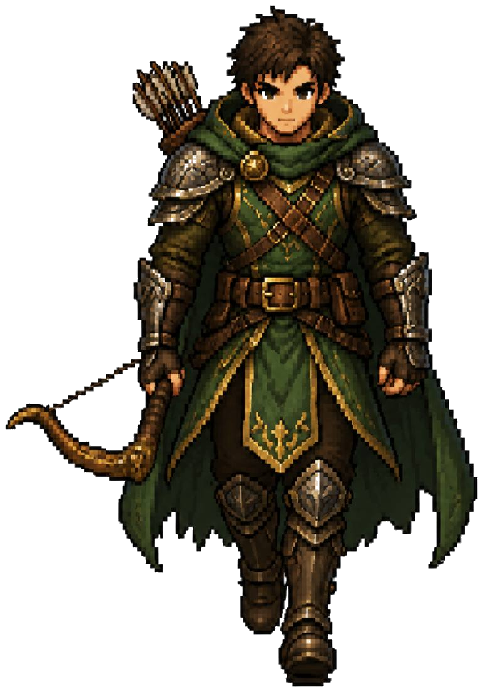
Rápido e preciso. Ataca de longe e escapa antes do monstro chegar.
Minere veios de ferro e mithril, corte árvores e colha ervas pelos mapas. Na cidade, forje armas, prepare poções e cozinhe pratos que dão bônus por alguns minutos.
Cada profissão sobe do nível 1 ao 50, de Aprendiz a Grão-Mestre. Quanto maior o nível, maior a chance de a criação dar certo e de achar itens raros, inclusive nos monstros.
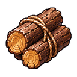
Lenhador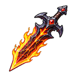
Ferreiro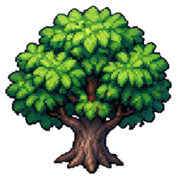
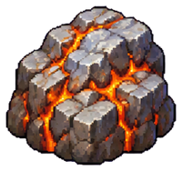
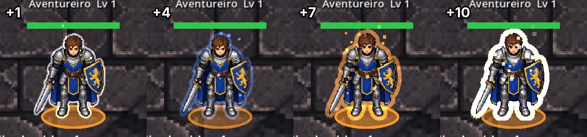
Leve uma arma até +10. Cada nível aumenta os atributos em 8% e muda a cor da aura: branca, verde, azul, roxa, laranja, dourada, até a celestial. A partir do +7, falhar faz o item voltar um nível.
O mercador da cidade vende até o equipamento de Ouro. Mithril, Obsidiana e Cristal só saem da forja ou do mercado entre jogadores, onde cada um define o preço e o jogo mostra o valor de mercado para ninguém vender barato demais. O mercado entre jogadores abre com o modo online.
Para celulares Android. O arquivo tem cerca de 90 MB.
Baixar APK (v0.1.22)O jogo funciona offline. O modo online está em preparação.